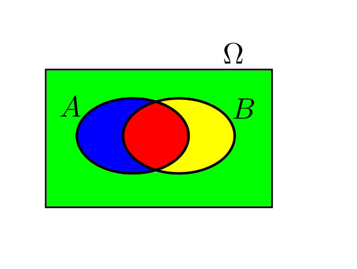
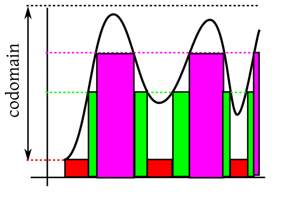

We often talk about the "size" of different sets. There are various ways to measure the size, length, area, volume, mass,
cardinality. All these measures share some common properties: they are defined over subsets of
some universal set (e.g., length for subsets of ${\mathbb R},$ while area for subsets of
${\mathbb R}^2$), they are always nonnegative
and they add up over disjoint sets.
Measure theory is a unified approach to deal with all these mathematically.
Let $\Omega$ be our universal set. We denote the measure of some $A\subseteq\Omega$ by
$\mu(A).$
EXAMPLE 1: If we are talking about "length" of subsetsof ${\mathbb R},$ then we take $\Omega={\mathbb R}.$ For
$A = (0,3)$ we have $\mu(A) = 3.$ ■
EXAMPLE 2: If we are talking about "area" of subsets of ${\mathbb R}^2$, then we take $\Omega={\mathbb R}^2.$ For
$A = [0,3]\times[-1,1]$ we have $\mu(A) = 3\times2=6.$ ■
EXAMPLE 3: If we are talking about "cardinality" of subsets of $\{1,2,...,10\}$, then we take $\Omega=\{1,2,...,10\}.$ For
$A = \{2,4,6,8,10\}$ we have $\mu(A) = 5.$ ■
In general, for $A\subseteq\Omega$, we require $\mu(A)$ to be a nonnegative number, and for any disjoint countable
collection of subsets
$A_1,A_2,...\subseteq\Omega$ we want $\mu(\cup A_i) = \sum \mu(A_i).$
This may sound simple, but there are a couple of problems.
To see the first problem, let's consider the example of "length"
of subsets of ${\mathbb R}.$ Here we would like to say that $\mu(A)= \infty$ if $A$ is
${\mathbb R}$ or $(0,\infty)$ or $[4,\infty)$ etc. So we have consider the symbol
$\infty$ as a nonnegative number.
This will not cause any problem with the countable
additivity condition, since we are not working with both $\infty$ and $-\infty.$ So
addition is still well-defined, as $\forall a\in{\mathbb R}~~a+\infty = \infty+a = \infty$ and
$\infty + \infty= \infty.$
The second problem is more subtle. Sometimes we want the measure to satisfy additional "nice" conditions.
Often we find that no measure with those "nice" conditions exists.
See this discussion for one such example.
If, however, we define it only for a subcollection of
subsets of $\Omega,$ then the problem goes away. The subcollection must of course be rich enough to allow interesting
mathematical manipulations. So we want a nonempty subcollection that is closed under countable
union, intrsection and complementation.
Any such subcollection is called a $\sigma$-algebra on $\Omega.$
EXAMPLE 4: Let $\Omega = \{1,2,...,10\}.$ Is $\big\{ \{1,2,3\}, \{2,3,4\} \big\}$ a $\sigma$-algebra over $\Omega$?
SOLUTION:
No. Here $\{1,2,3\}$ and $\{2,3,4\}$ are both in the collection, but their intersection $\{2,3\}$ is not.
■
EXAMPLE 5: Which subsets of $\Omega$ do we need to the above collection in order to turn it into a $\sigma$-algebra?
SOLUTION:
Let $A=\{1,2,3\}$ and $B=\{2,3,4\}.$ Drawing them as a Venn diagram we get 4 basic sets.

The 4 basic sets
The smallest $\sigma$-algebra consists of all possible unions of these. There are $2^4=16$ sets in the $\sigma$-algebra.
■
The idea behind this example is important. We often start with some collection of subsets, and
turn it into a simple by adding as few extra subsets to it as possible. The resulting $\sigma$-algebra is the smallest
$\sigma$-algebra containing the given collection. We call it the $\sigma$-algebra generated by the
collection.
If the initial collection is finite, then we can always proceed as in the above example. But more often the initial collection
is infinite. Then there is no simple way to describe the $\sigma$-algebra generated by it. The most prominent example
is given by the Borel $\sigma$-algebra defined below.
Combining all these, we get the definition of measure.
Here are a couple of related terms: the pair $(\Omega,\calF)$ is called a measurable space, and
the triple $(\Omega,\calF,\mu)$ is called a measure space. Note that if $A\not\in\calF$, then
$\mu(A)$ is undefined.
Notice that the conditions in this definition are much like the probability axioms, except that there we had one extra conditions
$P(\Omega)=1.$ This shows that probability is a measure. However, a measure $\mu$ need not have $\mu(\Omega)$
equal to $1.$ It could be any finite positive number or even $\infty.$ If $\mu(\Omega)< \infty,$ we naturally
call $\mu$ a finite measure. These are generally easier to work with. Infinite measres are harder to
deal. But there is an useful intermediate type of measure that allows $\mu(\Omega)=\infty$ and yet retains much of
the advantages of a finite measure. These are what we work with most of the time. Th definition goes like this.
One example is "length" or ${\mathbb R}.$ Entire ${\mathbb R}$ has infinite length, but ${\mathbb R}$ may be split up into $[n,n+1)$
for $n\in{\mathbb Z}$ and each of these has finite length.
How do we construct a measure? Typically we start with some subsets of $\Omega$ for which the value is obvious. Then
we use the countable additivity to define it for less obvious sets. Let's do it for "length". We all agree that the length
of $(a,b)$ is $b-a$ for $a<b.$ Then what should the length of $(0,1)\cup
(3,5)$ be? The answer is $1+2=3.$ Even less obvious is the length of ${\mathbb Q}.$ It
turns out to be $0+0+\cdots=0$ and so the length of ${\mathbb Q}^c$ must be $\infty.$
Can we do this for all subsets? Or may we run into some difficulty? The answer is very heartening:
If you have enough "obvious" cases, and there is no inconsistency
among them, then you may extend them uniquely. This is formalised as a famous theorem:
We shall not prove this in this course. But let us understand the significance of the conditions. The first condition is
clearly necessary. If $\mu$ already fails to be nonnegative or countably additive on $\calF$ how can we expect
it to be a measure when extended to $\calB?$ If we specify $\mu$ for each and every set in $\calB,$ then
of course it would suffice. But that woluld be too much work. Our aim is to specify $\mu$ for only a smaller number
of the sets. Clearly, we cannot fall below a generating set. So that condition puts a lower bound on how low we can go.
But that lower bound is actually too low, as not all generating collection would do. It must be "rich" enough. If you specify
$\mu$ on $A$ and $B,$ then you should also specify it for $A\cap B,$ to help determine how much
$A,B$ overlap each other. Also, for each $A$ we should be able to express $A^c$ as a finite union of sets
for which $\mu$ has been specified. This will help us to place $A$ in the background of $\Omega.$
The following exercises will apply this concept to define "length" for all
subsets in $\calB.$ This measure is called Lebesgue measure on $({\mathbb R},\calB).$
Let $\calF$ be the collection of all intervals (bounded, unbounded, open, closed,
semi-open) in ${\mathbb R}.$ Also we include $\phi$ in $\calF.$
We can define the length of an interval by intuition: $(a,b), [a,b], [a,b)$ and $(a,b]$ all should have length
$b-a.$ Unbounded intervals should have length $\infty.$
EXERCISE 6:
Show that
$\forall A,B\in\calF~~A\cap B\in\calF.$
EXERCISE 7: Is it true that $\forall A\in\calF~~\exists \mbox{disjoint }B_1,...,B_n\in\calF~~A^c = \cup B_i?$
Let $A = (0,1).$ How many $B_i$'s would you need? What if $B = [0,1]?$ or $[a, \infty)?$ or $(-\infty,5)?$
EXERCISE 8:
In each case below we give some sequence $(A_n)$ of sets in $\calF$. check if the sets are disjoint,
and whether their union
is again in $\calF.$ If so check if $\sum_n\mu(A_n) = \mu\left(\cup_n A_n\right).$
$A_n = [0,n))$ for $n\in{\mathbb N}.$
$A_n = [n,n+1]$ for $n\in{\mathbb N}.$
$A_n = [n,n+1)$ for $n\in{\mathbb N}.$
$A_n = \left[ 2^{-n}, 2^{-n+1}\right))$ for $n\in{\mathbb N}.$
Let $(a_n)$ be a positive sequence with $\sum a_n < \infty.$ Let $S_n = \sum_1^n a_i.$ Let $A_n = (2+S_{n-1}, 2+S_n].$
EXERCISE 9: Is our$\mu$ here $\sigma$-finite on $\calF?$
EXERCISE 10:
Show that there is a unique measure $\mu$ on $({\mathbb R},\calB)$ such that
$\mu(\phi)=0$ and $\forall a < b~~\mu\big( (a,b) \big) = b-a$ and unbounded intervals having length $\infty$
The next exercise asks you to prove the existence of $Unif(0,1),$ thus completing the
proof of the fundamental theorem.
EXERCISE 11: Follow the same procedure as in the exiercises above to show that there is a measure
on $\Omega = (0,1)$ such that for each $0 \leq a \leq b\leq 1$ we have
$\mu((a,b))=\mu((a,b]) =\mu([a,b)) =\mu([a,b])=b-a.$ Show that this $\mu$ is a
probability. This is called $Unif(0,1).$
We have talked about random variables as real-valued functions defined on $(\Omega,\calF).$ Thus, $X:\Omega\rightarrow{\mathbb R}.$
Suppose that we want to compute $P(X\in B)$ for some $B\subseteq {\mathbb R}.$ Now, the event $\{X\in B\}$ is actually
$$A=\{w\in\Omega~:~X(w)\in (a,b)\}\equiv X ^{-1} (a,b).$$
In order to be able to compute probability of this,
we need to have $X ^{-1}(B)\in\calF.$ Typically we want to be able to compute $P(X\in B)$ for
each $B\in\calB.$ So we need $\forall B\in\calB~~X ^{-1}(B)\in\calF.$
This motivates the following definition.
Proof:
Omitted.
[QED]
The following two definitions express the familiar concepts of a random variable and its distribution in terms of measure
theory.
We all know about
Riemann integration. We shall illustrate the idea with a positive, bounded function
$f:[a,b]\rightarrow{\mathbb R}$. The idea is to measure
the area under its graph by approximating it with steps
functions with finitely many steps. We do this from both above and below. For this we partition the domain of the function
into finitely many intervals and raise rectangles on them as follows.
The intuition is that if we take finer and finer partitions and raise the red rectangles as much as we can under the graph,
we shall come arbitrarily close to the area under the graph. If we do the same from above the graph using the blue rectangles,
then also we should come arbitrarily close to the same area. So our intuition dictates that
sup (red area) = inf(blue area),
and we plan to use this common value as the area under the curve. This brilliant intuition has just one loop hole, for many
functions the sup does not equal the inf! We call such functions non-Riemann integrable, and try
to avoid them at all costs. However, these
bad functions cannot be completely avoided, as they crop up naturally from time to time, usually as the limit of Riemann integrable
functions.
Lebesgue had a solution for this. Instead of partitioning the domain is plan was to partition the codomain. So he also
got red rectangles below the graph and blue rectangles above as follows.
And like Riemann he also hoped that
sup (red area) = inf(blue area),
and he wanted to call this the area under the curve.
EXERCISE 14: Consider the following graph of a bounded positive function. Finitely many values are marked
on the $y$-axis. Draw horizontal lines through them, and obtain the red and blue areas.
Just based on these diagrams, you may think that Lebesgue's idea is no different from Riemann's idea. Actually, Lebesgue's
approximations are more flexible than Riemann's. To understand this look at the graph below, where
we have shown the lower Lebesgue approximation using just 4 points in the codomain.

Just three heights, but so many rectangles!
Each value in the codomain, can give birth to many rectangles, depending on the ups and downs of the curve.
Indeed, a single height can give rise to infinitely many "rectangles"!
For instance, the function
$$f(x) =\left\{\begin{array}{ll}1&\text{if }x\in{\mathbb Q}\cap[0,1]\\ 0&\text{otherwise.}\end{array}\right. $$
takes only two values, 0 and 1. Yet each value is taken infinitely often.
So you can now feel why Lebesgues approximations are more flexible than Riemann's:
Riemann's approximations are special cases of Lebesgue's approximations, but
not vice versa.
As a result here
the sup(red) and inf(blue)
match for a more general class
of functions. In fact, they match for all measurable functions.
This also shows that if Riemann's sup(red) and inf(blue) areas meet, then so must Lebesgue's, and the meeting
point would be the same.
Now we shall take a rigourous look at Lebesgue's idea. First we need a name for the functions that Lebesgue is using to approximate
areas. We shall call them simple functions.
We can express a simple function mathematically using indicator functions. Let a simple function take only the values $c_1,...,c_k$
(all distinct). Let $A_i = \{\omega\in\Omega~:~f(\omega) = c_i\}.$ An example is shown below.
Clearly the $A_i$'s partition $\Omega$.
The $A_i$'s need not always be just finite union of intervals. For example, in case of the Dirichlet function, we have
just two $A_i$'s, one is ${\mathbb Q}\cap [0,1]$ and the other ${\mathbb Q}^c\cap [0,1].$ However, we always have only
finitely many $A_i$'s. We can now write the simple function as
$$f(\omega) = \sum_{i=1}^k c_i\ind_{A_i}(\omega).$$
Lebesgue wanted to think that each $c_i$ constributes a "rectangle" with height $c_i$ on
the base $A_i.$ Such a "rectangle" should have
area $c_i\times$ length
of $A_i$. But how to measure length of $A_i$'s?
It is this question that first
led him to create measure
theory. As we have already
stated, not all subsets
are measurable. So naturally he restrited his attention to only those simple functions $\sum_i
c_i\ind_{A_i}$, where the $A_i\in\calB.$
The next step in Lebesgue's intuition is to approximate the given function using simple functions,
from below and from above. This is where Lebesgue's approach beats Riemann's approach:
Since the Lebesgue integral exists for all bounded, non-negative measurable functions, hence it is enough to consider only
the sup of the approximations from below. This immediately allows us to define Lebesgue integral
for unbounded, measurable functions
as well. We just allow the sup to be $\infty.$ Similarly we may now carry out the procedure
over any measurable domain, not just intervals like $[a,b].$ Any "rectangle" with base
measure $\infty$ and positive height has area $\infty$, and any "rectangle" with zero
height has zero area (even if its base has measure $\infty$).
Moving from non-negative functions to general functions is easy. For $f:{\mathbb R}\rightarrow{\mathbb R}$ we define $f_+ =\max\{f,0\}$
and $f_- =\max\{-f,0\}.$ Then $f = f_+-f_-.$ We define $\int f\, d \lambda = \int f_+\, d \lambda -\int f_-\, d \lambda,$ if
both the integrals on the rhs are not $\infty.$
The construction so far has used "length" of measure the bases of the rectangles. We can use any
other measure, $\mu$, as well, as
long as the measure of the domain has finite measure. Then we shall write the Lebesgue integral as $\int f\, d\mu.$
When we take some probability measure in place of $\mu,$ we get the familiar definition of expectation.
Proof:
For $n\in{\mathbb N}$ and $\omega\in\Omega$ we define $s_n$ as follows. First partition the codomain
$[0,\infty)$ into $2$ intervals $[0,n)$ and $[n,\infty)$ and then
subdivide the first into equal subintervals of length $2^{-n}.$ So you get $N=n2^n+1$ subintervals in all. Call
these $[a_1,b_1),...,[a_N,b_N).$ These constitute a partition of the codomain.
Now set $s_n(\omega) = a_k$ if $f(\omega) \in[ a_k,b_k).$
The following picture shows this process for $n=1$ and $n=2.$
Notice how the subdivisions for $n=2$ fit into those for $n=1.$
For each $\omega\in\Omega$ and for each $n\in{\mathbb N}$ we have $s_n(\omega)\leq s_{n+1}(\omega).$
If $s_n(\omega) = a$ and $s_{n+1}(\omega) = b,$ then $f(\omega)\in[a+2^{-n})$ and also $f(\omega)\in[b+2^{-n-1}).$
So, by the contruction of the partitions, $[b+2^{-n-1})\subseteq[a,2^{-n}).$
Thus, $a\leq b,$ as required.
Again, for each $\omega\in\Omega$ we have $s_n(\omega)\rightarrow f(\omega).$
$\forall \omega\in\Omega~~\forall \epsilon>0~~\exists M\in{\mathbb N}~~\forall n\geq M ~~|f(\omega)-s_n(\omega)| < \epsilon.$
$\forall \omega$
Take any $\omega\in\Omega.$
$\forall \epsilon$
Take any $\epsilon>0.$
$\exists M$
Choose $M\in{\mathbb N}$ such that $M> f(\omega)$ and $2^{-M} < \epsilon.$ (Possible since ${\mathbb N}$
is unbounded above and $2^{-n}\rightarrow 0$ as $n\rightarrow \infty.$
EXERCISE 17:
Show that the convergence is uniform if $f$ is bounded.
EXERCISE 18:
Show that if, in the theorem above, $f$ is measurable (w.r.t. any given $\sigma$-field $\calF$
over $\Omega$ and the Borel $\sigma$-field over ${\mathbb R}$), then so must be each $s_n.$
The next step is to show that the red areas indeed converge to the supremum.
Proof:
Shall show
Target
$\forall \epsilon>0~~\exists N\in{\mathbb N}~~\forall n\geq N~~ \int s_n > \int f-\epsilon.$
This will complete the proof, since anyway $\left(\int s_n\right)$ is a non-decreasing sequence bounded
from above by $\int f$
(The case $\int f=\infty$ is trivially
included in it).
Since $\int f = \sup\{\int z~:~ z\leq f,~~z \mbox{ simple}\},$
hence $\exists$ simple $ z\leq f$ with $\int z > \int f-\epsilon.$
Fix some $\delta>0.$
Let $A_n =\{s_n > z-\delta\}.$
Then $A_n\uparrow\Omega.$
Since $s_n$'s are non-decreasing, hence $A_1\subseteq A_2\subseteq A_3\subseteq\cdots.$
Also since $\forall\omega\in\Omega~~s_n(w)\uparrow f(w),$ hence $\cup_n A_n=\Omega.$
So $\int s_n\geq \int_{A_n} s_n \geq \int_{A_n}z \geq \int z-M\mu(A_n^c)-\delta,$
where $M = \max Z.$
Taking limit $\lim \int s_n \geq z- \delta.$
Since $\delta>0$ is arbitrary, we have $\lim \int s_n \geq \int z.$
[QED]
We had stated last semester that if $X,Y$ are two jointly distributed random variables with expectations, and $a,b\in{\mathbb R}$
are any two numbers, then $aX+bY$ is also a random variable with expectation, and $E(aX+bY) = aE(X)+bE(Y).$
First we show that $E(X+Y) = E(X)+E(Y)$ in three steps.
Step 1: Show this when $X,Y$ are simple random variables. We have already done this last semester.
Step 2: Show this for non-negative $X,Y.$ Let $(S_n)$ and $(T_n)$ be simplifications for $X$
and $Y,$ respectively. Then $(S_n+T_n)$ is a simplification for $X+Y.$
Also $E(S_n+T_n) = E(S_n)+E(T_n).$ Te result now follows on taking limit of both sides.
Step 3: Show this for general $X,Y.$ Here we apply step 2 to $X_+, X_-, Y_+$ and $Y_-.$
Then we show that for $a>0$ we have $E(aX) = E(X).$ This proof also proceeds in three steps (left as an exercise).
Finally, we show $E(-X)= -E(X).$ Let $Y = -X.$ Then $Y_+ = X_-$ and $Y_- = X_+.$ So $E(Y) = E(Y_+)-E(Y_-) = E(X_-)-E(X_+) = -E(X).$
We have $Z_{n,k} \leq Y_k.$
Taking limit as $k\rightarrow \infty,$ we have $X_n\leq \lim_k Y_k.$
Now taking limit as $n\rightarrow \infty,$ we have $X\leq \lim_k Y_k.$
Also we have $Y_n\leq X_n\leq X.$ So $\lim_k Y_k\leq X.$
Hence $\lim_k Y_k= X.$
This completes the proof.
[QED]
EXERCISE 19:
If $(X_n)$ is a nonincreasing sequence of nonnegative random variables converging to some random variable $X,$
and $E(X_1)<\infty,$ then show that $E(X_n)\downarrow E(X).$ What if the assumption $E(X_1)<\infty$ is
dropped?
EXERCISE 20:
Suppose that $X_n$'s are nonnegative random variables. Show that
$$E(\sum_1^\infty X_n) = \sum_1^\infty E(X_n).$$
In the simple version we assumed that the limit of $(X_n)$ is a random variable. In particular, we assumed that for
each $\omega\in\Omega$ the sequence $(X_n(\omega))$ converges to some real number. We may actually drop these
assumptions. We may allow $(X_n(\omega))$ to diverge. Then the limit $X(\omega)$ is a function from $\Omega$
to $[0,\infty].$ One can then show (not assume) that this $X$ is a random variable. We do this
below.
Then $Y_n\uparrow \liminf X_n.$
So, by MCT, $E(Y_n)\rightarrow E(\liminf X_n).$
Now $E(X_n) \geq E(Y_n).$
Hence
$$E(\liminf X_n) \leq \liminf E(X_n),$$
as required.
[QED]
Proof:
Clearly, $|X|\leq Y.$
So, by triangle inequality, $|X_n-X|\leq |X_n|+|X|\leq 2Y.$
Let $Z_n = 2Y-|X_n-X|.$ Then $Z_n$'s are all nonnegative random variables.
Applying Fatou's lemma to $(Z_n)$, we have
$$E(\liminf Z_n)\leq \liminf E(Z_n) = 2E(Y)-\limsup E|X_n-X| = 2E(Y).$$
Now
$$\liminf Z_n = 2Y-\limsup|X_n-X| = 2Y,$$
and
$$\liminf E(Z_n) = 2E(Y)-\limsup E|X_n-X| .$$
So we have
$$2Y\leq 2Y-\limsup E|X_n-X|,$$
or $\limsup E|X-n-X|\leq 0.$
Hence $E|X_n-X|\rightarrow 0,$ as required.
[QED]
We have used a special case of this theorem, where $\nu$ is a probability measure and $\mu$ is the Lebesgue measure.
Such probability measures are called absolutely continuous. We have worked with the special case where we had
a density that was Riemann integrable as well.